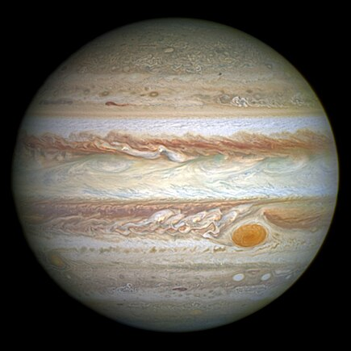

🚀SOLAR SYSTEM: About Jupiter and Saturn
Both Jupiter and Saturn play critical roles in our understanding of planetary formation and dynamics. Their massive sizes and compositions provide clues about the early solar system. Additionally, the potential habitability of moons like Europa and Titan fuels curiosity about life beyond Earth.
These two gas giants are not just planets but entire systems, with their moons and rings resembling miniature solar systems. Their study continues to unveil the mysteries of the cosmos, inspiring exploration and discovery.
Jupiter
Jupiter is the fifth planet from the Sun and the largest in the Solar System. It is a gas giant with a mass more than 2.5 times that of all the other planets in the Solar System combined and slightly less than one-thousandth the mass of the Sun. Its diameter is eleven times that of Earth, and a tenth that of the Sun. Jupiter orbits the Sun at a distance of 5.20 AU (778.5 Gm), with an orbital period of 11.86 years. It is the third-brightest natural object in the Earth's night sky, after the Moon and Venus, and has been observed since prehistoric times. Its name derives from that of Jupiter, the chief deity of ancient Roman religion.
Key Points:-
- Jupiter is a gas giant and so lacks an Earth-like surface. If it has a solid inner core at all, it’s likely only about the size of Earth.
- Jupiter rotates once about every 10 hours (a Jovian day), but takes about 12 Earth years to complete one orbit of the Sun (a Jovian year).
- Jupiter's Great Red Spot is a gigantic storm that’s about twice the size of Earth and has raged for over a century.
Jupiter's magnetic field is the strongest and second-largest contiguous structure in the Solar System, generated by eddy currents within the fluid, metallic hydrogen core. The solar wind interacts with the magnetosphere, extending it outward and affecting Jupiter's orbit. Jupiter is surrounded by a faint system of planetary rings that were discovered in 1979 by Voyager 1 and further investigated by the Galileo orbiter in the 1990s. The Jovian ring system consists mainly of dust and has three main segments: an inner torus of particles known as the halo, a relatively bright main ring, and an outer gossamer ring. The rings have a reddish colour in visible and near-infrared light. The age of the ring system is unknown, possibly dating back to Jupiter's formation.
Moons:-
At least 95 moons orbit the planet; the four largest moons—Io, Europa, Ganymede, and Callisto—orbit within the magnetosphere, and were discovered by Galileo Galilei in 1610. Ganymede, the largest of the four, is larger than the planet Mercury. Since 1973, Jupiter has been visited by nine robotic probes: seven flybys and two dedicated orbiters, with two more en route.
Saturn

Saturn is the sixth planet from the Sun and the second largest in the Solar System, after Jupiter. It is a gas giant, with an average radius of about nine times that of Earth. It has an eighth the average density of Earth, but is over 95 times more massive. Even though Saturn is almost as big as Jupiter, Saturn has less than a third its mass. Saturn orbits the Sun at a distance of 9.59 AU (1,434 million km), with an orbital period of 29.45 years.
Key Points:-
- Nine Earths side by side would almost span Saturn’s diameter. That doesn’t include Saturn’s rings.
- Saturn has the most spectacular ring system, with seven rings and several gaps and divisions between them.
- Saturn takes about 10.7 hours (no one knows precisely) to rotate on its axis once—a Saturn “day”—and 29 Earth years to orbit the sun.
Saturn's interior is thought to be composed of a rocky core, surrounded by a deep layer of metallic hydrogen, an intermediate layer of liquid hydrogen and liquid helium, and an outer layer of gas. Saturn has a pale yellow hue, due to ammonia crystals in its upper atmosphere. An electrical current in the metallic hydrogen layer is thought to give rise to Saturn's planetary magnetic field, which is weaker than Earth's, but has a magnetic moment 580 times that of Earth because of Saturn's greater size. Saturn's magnetic field strength is about a twentieth that of Jupiter. The outer atmosphere is generally bland and lacking in contrast, although long-lived features can appear. Wind speeds on Saturn can reach 1,800 kilometres per hour (1,100 miles per hour).
Moons:-
The planet has a bright and extensive system of rings, composed mainly of ice particles, with a smaller amount of rocky debris and dust. At least 146 moons orbit the planet, of which 63 are officially named; these do not include the hundreds of moonlets in the rings. Titan, Saturn's largest moon and the second largest in the Solar System, is larger (and less massive) than the planet Mercury and is the only moon in the Solar System that has a substantial atmosphere.
Here is a table comparing Jupiter and Saturn:
| Feature | Jupiter | Saturn |
|---|---|---|
| Size (Diameter) | ~139,820 km | ~116,460 km |
| Mass | 318 times Earth's mass | 95 times Earth's mass |
| Atmosphere | Bold, colorful bands with Great Red Spot | Pale yellow with less distinct cloud bands |
| Density | Strongest in the solar system (~20,000× Earth’s) | Weaker than Jupiter but still strong (578× Earth’s) |
Want to get more articles like this? Subscribe now:-